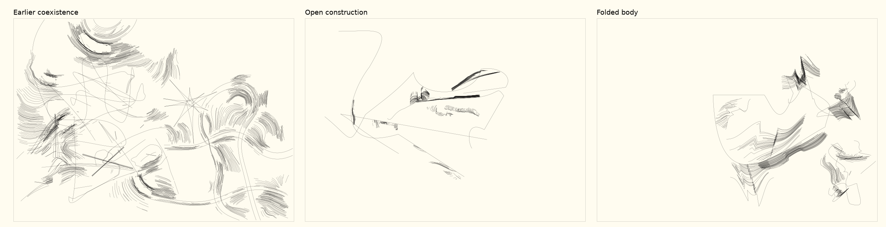

Territory02 — replacing the scaffold
On this page
5 October 2026 · screen experiment · no convergence selected.
Gallery · Source notes · Independent review
Ian rejected the coexistence round as barely changed, still starry and repeating the same shapes. The primary had preserved so much of the earlier drawing that local revisions could not deliver the requested departure. The earlier report now records that rejection; its positive machine readings are not acceptance.
This experiment replaces every main path. Only cropped pieces of actual grown grain survive. Old base courses, radial thorn/surprise, slash/chord, wedge and continuation layers are excluded from the new output. Open constructions and folded bodies remain separate trials alongside the rejected earlier result.

Visible changes and remaining habits
The replacement is apparent at whole-sheet scale. Open constructions distributes thin long passages and small rough patches across larger gaps. Folded bodies allows broader enclosures, incomplete boundaries, overlapping material and stronger angular changes. Different path counts, lengths, reversals and closures replace the fixed few smooth additions of the previous round. The two trials use different random streams: their comparison does not isolate material alone.
P/1213 is a useful open case: a long shelf-like line, a raised curved blade and a detached row of fragments compete for the central space. P/1277 is much less active; its scattered light contours and lower cluster do not sustain the same reading. Keeping that weak case matters more than presenting only P/1213.
T/47 has a large irregular enclosure with a small rounded protrusion and a separate rough thicket to its right. The interval between them feels particular. T/1277 has overlapping grain directions and a transition between a mesh, angular repeated bends and a long escaping curve. T/24 is weaker: most material collects at one end while the broad contour does little in return. T/1151 retains an unresolved possibility of detached grain reading as garnish.
The texture still has a recognisable stepped, comb-like dialect. Removing the explicit stars does not by itself solve recurrence. Some inherited grain can still converge into pointed clusters, and repeated cropped fragments can become a new ornament habit. This is a visibly different scaffold with unresolved material vocabulary, not a claim that the generator is now artistically solved.
Revision and independent reading
The first development probe wrapped patches along the moving normal of a path.
Around sharp corners, that collapsed many fibers into fans and recreated a
star-like effect. The retained probe-v1.png and source show this failure. The
current finite chord frame avoids that collapse, while retaining limited bend,
shear and unequal patch width. It can also make a patch feel pasted beside a
line; the trade-off remains visible.
A Sol second eye first compared neutral full/lines/material omission controls, then six neutral development/fresh population sheets with whole and close views. It described P as a clear distributional departure whose local material relation still often repeats. It read T as farther from K, especially where bundles cross or redirect one another. Its preference for T/1277's incompatible grain is useful; I remain cautious that a mesh can become just another default. The reviewer also found the isolated lines in the calibration weaker than the combined drawing. That warns against equating deleting inherited devices with sufficient interest.
Evidence and next decisions
Development seeds: 13, 24, 47. Fresh seeds: 1151, 1213, 1277. Twenty source and dependency hashes were frozen before fresh generation and remain unchanged. No tuning followed the fresh population. There are twelve new drawings and six earlier references, with separate new lines/material checks. Repeatability, finite coordinates, bed bounds and geometry ceilings passed. New results range from about 3.2 to 13.9 m of line, at most 15,772 points. Reduced ink is part of the visible departure; the comparisons do not match total material density.
Seventy-two gallery image states passed at desktop/mobile sizes using only in-memory own SVG/CSS at about:blank. Actual local-file navigation, paper and human interaction remain unverified. All strokes remain 0.1 mm. The fixed central close can omit the active passage, especially P/1277 and T/24.
For a next discussion, the useful fork is whether to develop the broad body/ fragment relations or replace more of the remaining comb-like grain itself. Either can be explored without combining these trials into one style. Ian's judgement of the visible results comes first; no further convergence is selected.